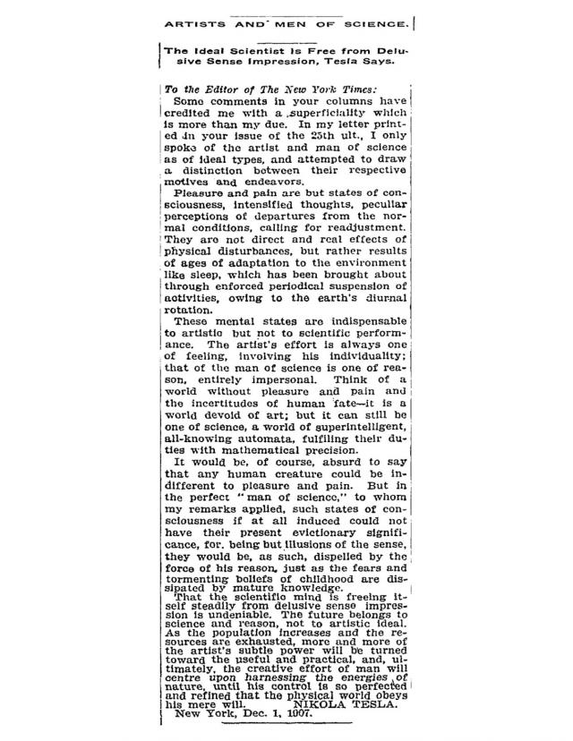
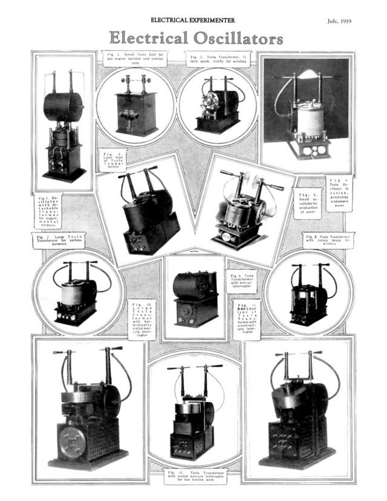
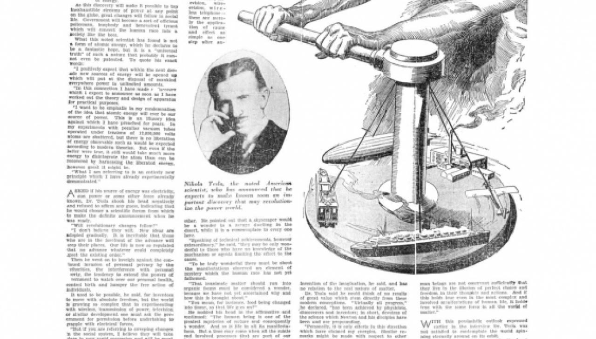
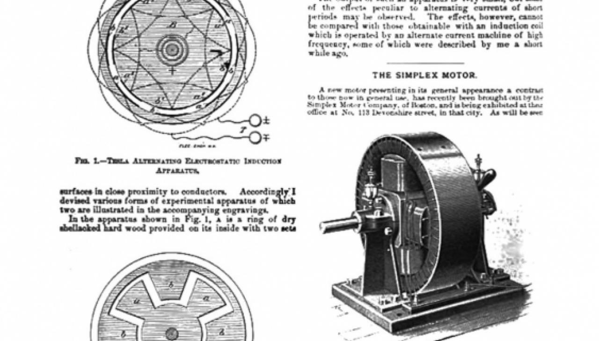
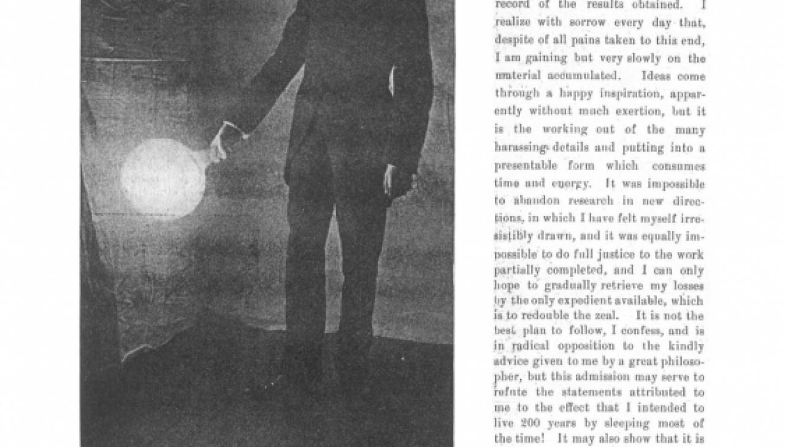
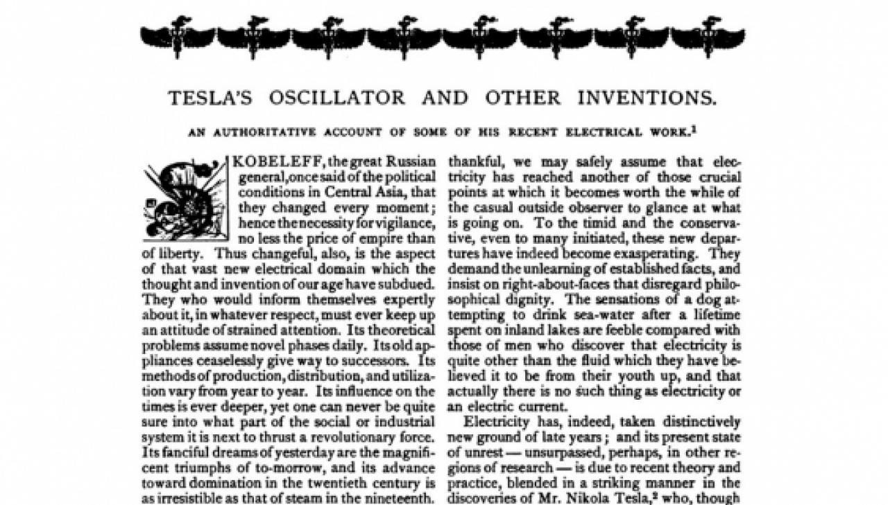
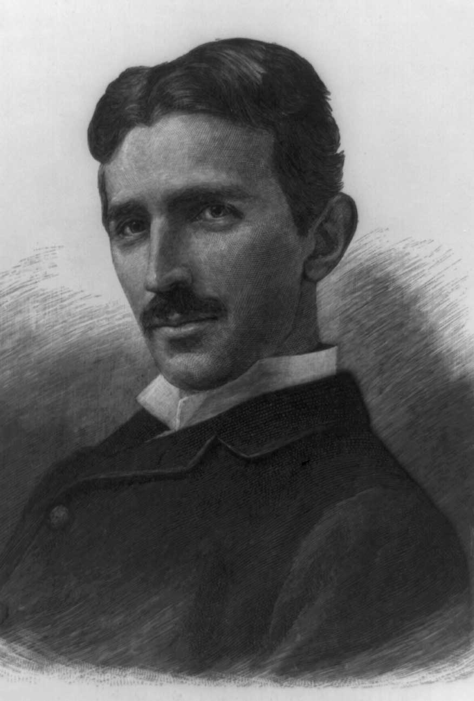

Tesla, Electrical Genius, Dead
Greensburg Daily Tribune January 8th, 1943

Artists and Men of Science
New York Times December 2nd, 1907

Electrical Oscillators
Electrical Experimenter, The July, 1919

Sunday Star, The, Washington, D.C.
May 17th, 1931
Great Scientific Discovery Impends

Alternate Current Electro-Static Induction Apparatus
Electrical Engineer, The May 6th, 1891

Some Experiments in Tesla's Laboratory with Currents of High Potential and High Frequency
Electrical Review, The March 29th, 1899

Tesla's Oscillator and Other Inventions
Century Magazine, The April, 1895

The Moon's Rotation (Follow-up)
Electrical Experimenter, The June, 1919
If the genius of invention were to reveal to-morrow the secret of immortality, of eternal beauty and youth, for which all humanity is aching, the same inexorable agents which prevent a mass from changing suddenly its velocity would likewise resist the force of the new knowledge until time gradually modifies human thought.
